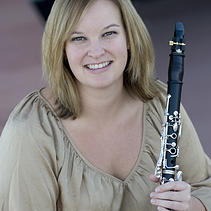

About Me
Dr. Katherine Palmer is currently the Museum Educator at the Musical Instrument Museum in Phoenix, Arizona where she is in charge of developing and teaching educational programs. Katherine earned a Doctorate of Musical Arts (clarinet) and a Master of Arts (ethnomusicology) from Arizona State University. Her master's thesis focused on the Venezuelan music education program (El Sistema), identity formation, and nationalism; her doctoral research was centered on the Peruvian composer, Armando Guevara Ochoa, and his works for wind instruments. Committed to research and performance, Katherine has presented papers, presentations, and performances throughout the United States. Additionally, she has performed in Russia, Japan, Belgium, Italy, Argentina, Peru, and Tanzania.
An active performing musician in the Phoenix area, Katherine is an adjunct instructor of music humanities at Maricopa Community Colleges, teaches early childhood music and movement courses at local preschools, runs clarinet sectionals for local high schools, and maintains a private woodwind studio. Katherine is the Assistant Director for Clarinets for Conservation, a non-profit organization that provides music and conservation education in Moshi, Tanzania during the summer months to primary and secondary students. She completed her undergraduate studies at the University of Miami (FL) in clarinet performance with a minor in anthropology and a Masters of Music in clarinet performance at ASU.
Curriculum Vitæ

- Skills
-
Clarinet
Woodwinds
World Music
Early Childhood
Music Education
Arts Organizations and Outreach - Education
-
Doctorate of Musical Arts, Arizona State University, 2013
"Biographical Sketch and Selected Works of Armando Guevara Ochoa"
Master of Arts in Ethnomusicology, Arizona State University, 2013
"Social Reform through Music Education and the Establishment of a National Identity in Venezuela"
Master of Music in Clarinet, Arizona State University, 2009
Bachelor of Music in Clarinet, University of Miami (FL), 2007
Minor in anthropology - Selected Professional Experience
-
Musical Instrument Museum (2012 - present), Museum Educator
Museum Educator (2013-present)
- • Create, implement, and teach sustainable museum programs for youth and adults
- • Organize administrative needs of paid educational programs
Education Intern (2012-2013)
- • Assist in curricular development for docent trainings and educational programming
- • Develop an early childhood music and movement program to increase educational offerings
- • Assist curators with research and development of exhibits
Maricopa Community Colleges (2011 - present), Adjunct Instructor of Music Humanities
Paradise Valley Community College
- • Music History and Literature (MHL) 143: Music in World Cultures (Online): Non-European musical traditions including the study of music in rituals, musical instruments, and the impace of cultures on musical styles. Developed this course in an online format that adheres to the Quality Matters rubric
- • MHL153: Rock Music and Culture: History of rock music including how cultural, social, political, and economic conditions have shaped its evolution
- • MHL145: American Jazz and Popular Music: The study of cultural and social contributions to the evolution of American jazz and popular music from the mid-1800s to present
South Mountain Community College
- • MHL153: Rock Music and Culture: History of rock music including how cultural, social, political, and economic conditions have shaped its evolution
Teacher, Guest Artist, and Clinician (2003 - present), Clarinetist
Phoenix Area (2007-present), South Florida area (2003-2007)
- • Woodwind students ranging from beginners to adults
International
- • Clarinets for Conservation, Moshi, Tanzania
- • Instituto Superior de Musica Leandro Alvina Miranda, Cusco, Peru
- • Conservatorio Nacional de Musica in Lima
National
- • North Canyon High School, Phoenix, AZ
- • Clarinets for Conservation Lecture-Rectials, University of Tennessee - Knoxville
- • Recruitment Presentations for PVCC: Paradise Valley High School, Westwood High School
- • University of Miami, Coral Gables, FL
Arizona State University (2009 - 2013), Teaching Assistant
MHL140: Music as Culture: World Musics in Context
- • Assist in teaching and grading term papers, exams, and performance presentations
- • Maintain course Blackboard website
MHL354: Music of the Beatles (Online)
- • Assist in teaching and grading responsibilites
- • Monitor course email
- • Provide online guidance to more than 200 students per semester
MUS355: Survey of American Music (Online)
- • Author modules on "Music and Age" and "Music and Race," including exams
- • Monitor course email
- • Provide online guidance to more than 200 students per semster
- Selected Performance Experience
-
International
Clarinets for Conservation
- • Present progressive and collaborative performances throughout the Kilimanjaro region in Tanzania
Center for World Music
- • Performed with local musicians in a variety of musical styles, including traditional Andean, Afro-Peruvian, and classical
Belgium Clarinet Academy
- • Lessons with Robert Spring and Eddy Vanoosthuyse
- • Gave recitals for local residents
- • Featured as a soloist with the clarinet choir
Rome Festival
- • Performed fully staged opera and numerous orchestral works
National
Clarinets for Conservation
- • Participate in fundraising and awareness tours: University of Tennessee - Knoxville, Saratoga Springs (NY), and Phoenix (AZ)
Musical Instrument Museum
- • "Museum Encounters" performances: thirty-minute musical demonstrations that put musician-teaching artists in the museum galleries to perform for and interact with guests.
Phoenix Area Substitute Clarinetist
- • Performed with various groups including Tucson Symphony, Scottsdale Arts Orchestra, Tempe Symphonic Wind Ensemble, and Paradise Winds
Arizona State University
- • Wind Symphony, Orchestra, and various chamber ensembles
University of Miami
- • Guest artist recital
Naples Philharmonic
- • Clarinet section substitute
University of Miami
- • Wind Ensemble, Orchestra, and Chamber Winds
Education
Under Construction
Audio Recordings
Fantasia Peruana for solo clarinet
Armando Guevara Ochoa, arr. K. Palmer
Recorded 2013
Armando Guevara Ochoa, arr. K. Palmer
Recorded 2013
Zarabandeo for Clarinet and Piano (excerpt)
Arturo Marquez
Gail Novak, piano
Recorded 2011
Arturo Marquez
Gail Novak, piano
Recorded 2011
Fantasia on Themes from Bellini's Opera "I Puritani" (excerpt)
L. Bassi, ed. Voxman
Gail Novak, piano
Recorded 2011
L. Bassi, ed. Voxman
Gail Novak, piano
Recorded 2011
Huayno for two clarinets
Armando Guevara Ochoa, arr. K. Palmer
Julia Georges, clarinet
Recorded 2013
Armando Guevara Ochoa, arr. K. Palmer
Julia Georges, clarinet
Recorded 2013
Sonata for Clarinet and Piano
III. Allegro con fuoco
F. Poulenc
Gail Novak, piano
Recorded 2011
III. Allegro con fuoco
F. Poulenc
Gail Novak, piano
Recorded 2011
Lamento Andinfo
Armando Guevara Ochoa, arr. Doug Harbin
Kerry Ginger, soprano
Jeremy Peterman, piano
Recorded 2013
Armando Guevara Ochoa, arr. Doug Harbin
Kerry Ginger, soprano
Jeremy Peterman, piano
Recorded 2013
Partita Peruana for solo clarinet
Armando Guevara Ochoa, arr. K. Palmer
Recorded 2013
Armando Guevara Ochoa, arr. K. Palmer
Recorded 2013
Harawi for two clarinets
Armando Guevara Ochoa, arr. Doug Harbin
Julia Georges, clarinet
Recorded 2013
Armando Guevara Ochoa, arr. Doug Harbin
Julia Georges, clarinet
Recorded 2013
Gallery
{kind=link}
{kind=link}
{kind=link}